15navi
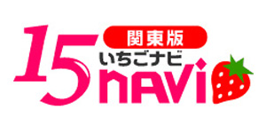
求人サイトへ
※15ナビはバナーの規制が厳しい為、女性の素材等が使えない場合があります。
最悪は、作成した物を参考にして頂き、業者にお願いする形になると思います。
インレッド
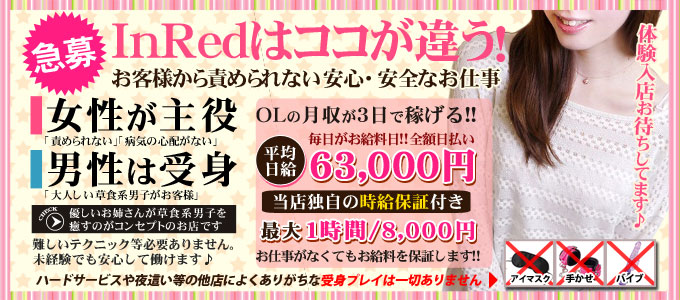
■680×300_PCメインバナーnew2017.2.14
■200×150_3枚画像new2017.2.14
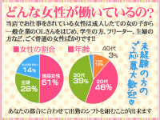
■200×150_3枚画像new2017.2.14
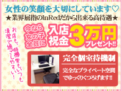
■200×150_3枚画像new2017.2.14
ママ＆ガール
■680×300_PCメインバナー（現在掲載中のもの）
■680×300_PCメインバナーnew2016.5.29
■200×150_3枚画像new2016.5.30
■200×150_3枚画像new2016.5.30
■200×150_3枚画像new2016.5.30
※この写真はもしかするとはじかれるかも。
妻がオンナに変わるとき
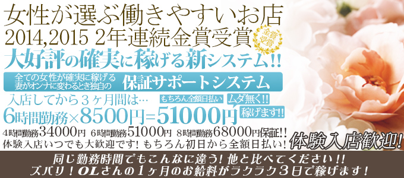
■680×300_PCメインバナー（現在掲載中のもの）
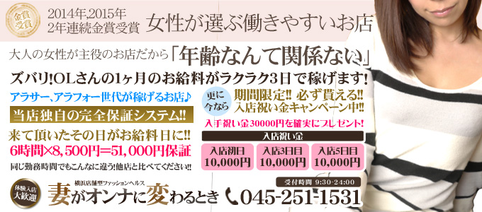
■680×300_PCメインバナーnew2016.5.29
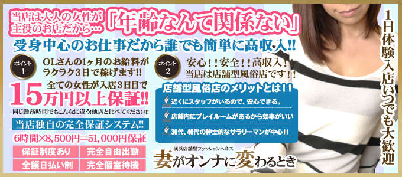
■680×300_PCメインバナーnew2016.9.29
■200×150_3枚画像new2016.5.29
■200×150_3枚画像new2016.5.29
■200×150_3枚画像new2016.5.29
アネガール
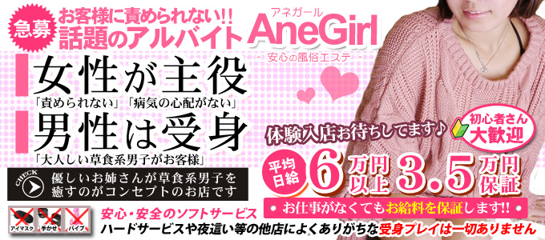
■680×300_PCメインバナーnew2016.5.13
■200×150_3枚画像new2016.7.25
■200×150_3枚画像new2016.7.25
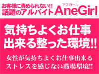
■200×150_3枚画像new2016.7.25
ひよこマーク
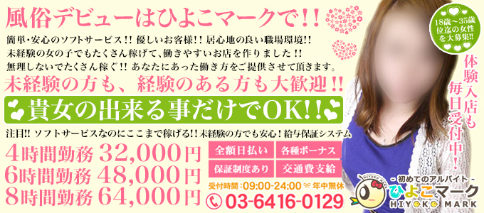
■680×300_PCメインバナー（現在掲載中のもの）
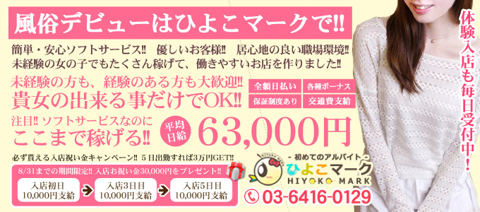
■680×300_PCメインバナーnew2016.7.26_キャンペーン日付変更
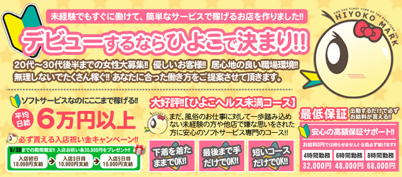
■680×300_PCメインバナーnew2016.8.1
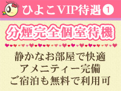
■200×150_3枚画像new2016.5.29
■200×150_3枚画像new2016.5.29
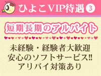
■200×150_3枚画像new2016.5.29
ベリーガール
■680×300_PCメインバナー内容修正2016.5.18
■200×150_3枚画像new2016.5.29
■200×150_3枚画像new2016.5.29
■200×150_3枚画像new2016.5.29